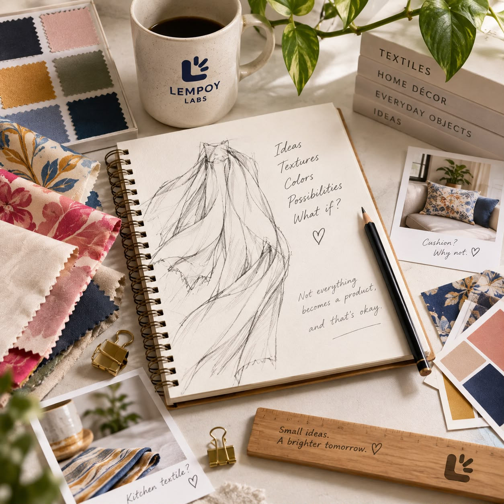

01 / Materials
Beyond the stole
What happens when an idea moves beyond something you wear? We explore textiles as cushions, kitchen pieces, home décor, wall art, and whatever else catches our curiosity.

✦ The Workbench
Inside the Lempoy Labs Studio
This is where Lempoy Labs plays with possibilities - textiles, home décor, everyday objects, materials, colors, patterns, and whatever else makes us wonder, “Could this work?”
Some ideas make it to the artisans. Some come back with a polite “maybe not.” Some change completely along the way. And many will never go into production at all.
That’s the point.
Not everything explored here is destined to become a product.
✦ Notes from the table
01 / Materials
02 / Process
03 / Experiments
✦ Process
Some ideas look wonderful on paper but don’t translate the same way by hand. Sometimes the people who know the material best tell us an idea needs to change - or simply won’t work.
That’s not the end of the process.
Sometimes that’s where the better idea begins.
Workbench Rule #01
Concepts shown here may change, be rejected, disappear completely, or become something else. Finished unreleased designs stay off the table.